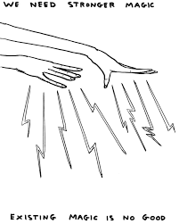
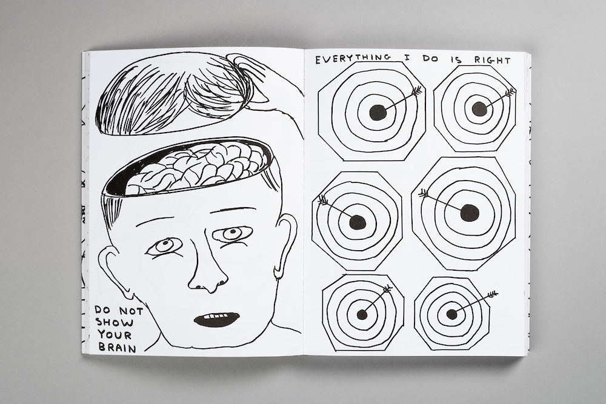

1.1 The Purpose Of IT In Modern Business
IT is vital to modern business in a large variety of ways allowing people to record and share data, work and communicate more efficiently and productively with customers, co workers and clients. IT systems affect every aspect of our working lives be it a program that enables you to micro-trade on the Forex to speculate on currencies [1] or a headset that instructs a worker which item to pick in a warehouse for delivery.
Security is a big aspect of the purpose of IT to businesses as it allows them to keep secure sensitive information be it client details, confidential information of a patient or a protected intellectual property. Well implemented information and communications technology can help greatly reduce a business’s costs. Mundane time wasting tasks can be automated and vital data needed for decision making or as part of a sales pitch can be easily gathered and distributed.
"https://www.strategystocks.co.uk/micro-trading.html> [1]
1.2 Methods, Skills And Resources
A collaborative digital project must be planned and work allocated according to team members strengths and weaknesses keeping track of what is being achieved, what people are working on, where the project is falling behind and what combining the work will result in. “Digital project managers, in the simplest sense, ensure things get done in a digital world. They make sure that the digital plan of action is executed according to the plan they have laid out.” [2]. Anyone completing a digital marketing project needs good attention to detail to avoid errors in thought to be completed project segments. It is necessary to have an analytical and critical mindset to decipher what tasks need to be done and when. Workers can share code and divide work loads using distributed version control systems such as Git or Github [4]. A knowledge of the digital project methodologies such as “Agile, Waterfall, Kanban, and Scrum” [3] used in conjunction with management tools like “Atlassian Jira, nTask, Wrike and Trello” [3] allow for a project to be managed in a productive and organised manner, ultimately making the project successful.
https://digitalmarketinginstitute.com/en-gb/blog/what-skills-do-i-need-to-be-a-digital-project-manager [2]1.3 Plan and carry out tasks using IT – e.g. making your website. How will you plan it? Include a link to your Trello board
I intend to use the methods and resources described in section 1.2 to plan and carry out this project. I intend to have three lists of “To Do”, “Doing” and “Done” and to update them as appropriate.
My Trello Board1.4 Describe the risks that might impact digital projects – what causes digital projects to fail? Why?
Failure to use proven tools and methodologies such Trello and Kanban or Scrum can result in poor planning leading to time and energy being wasted. A lack of direction can result in project ending problems to arise or the end result being a jumbled together miss mash of a product or service that is neither one thing nor another. Consider a film whose score does not match the tone of the script which is being delivered by actors in a way completely disjointed from the other elements of the production, leaving a confusing mess. Operational and up to date hardware is also essential.
1.5 Describe how you would go about selecting and using IT systems and software – how do you select the right kind of technology for the job?
First of all obviously I would see what the project was and if it were a customer asking for example a website I would take their desires into consideration and see which IT systems and software would best equip me to meet them. I would use the software I had most knowledge with that currently being visual studio code. If the project were collaborative I would gauge which software the group was most adept with and any possible problems it may have when work is divided. Budgets and the project's size have to be considered, also choosing the most applicable IT systems for the task in hand.
1.6 Describe and provide analysis on how your chosen technologies have helped you achieve your outcomes. – How has Trello helped you plan and how can git and GitHub help with your code’s version control?
Looking back from the stage I am with the project now I believe I could have planned the website better especially regarding links on the first page. Trello has obviously been useful with planning and task management. Github and git help with the code’s version control as clearly you can test your code and update it where necessary implementing new or varying ways of presenting the information you want to. [5]. Online tutorial sites such as https://www.w3schools.com/ have also factored greatly with regards to the various forms and changes the code has taken and undergone.
https://www.atlassian.com/git/tutorials/what-is-version-control[5]1.7 Describe legal guidelines and constraints that impact digital projects – How does GDPR impact digital projects?
The General Data Protection Regulation (GDPR) is an EU wide extension of The Data Protection Act designed to give ordinary civilians more control over the information that corporations and other parties may have about them. As an increasing amount of personal information is collected, stored and traded by companies and governments the GDPR aims to protect information that may identify us like your name, contact details, computer location and also a person's race and sexual orientation. [7], [8]. The GDPR states that companies and governments must prove to have a lawful reason for holding data of this type and that it is secure in their possession. Digital projects therefore must consider this in their development stage to assure the GDPR is adhered to. The product must give the user options on how their data is managed by asking for consent for example or not storing certain data types if it can’t be guaranteed safe.
The Data Protection Bill added criminal offenses for data protection breaches.It “gives the ICO the power to impose eye watering fines for those in breach (of the GDPR). The Bill deals with elements of the regulatory framework not covered by GDPR, and sets out the criminal offences for data protection breaches” [9]. With this in mind it would be worth considering elements within a given digital project that allow the user of the finished product to delete any possible personal information that has been collected or again ask for consent.